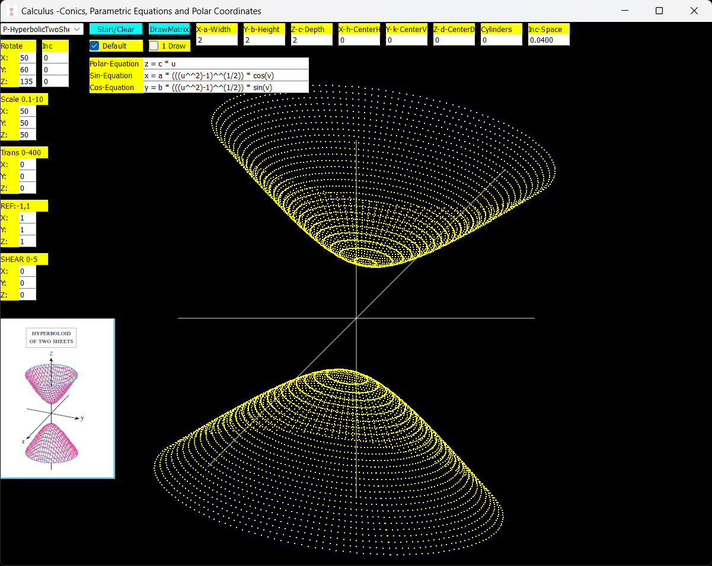
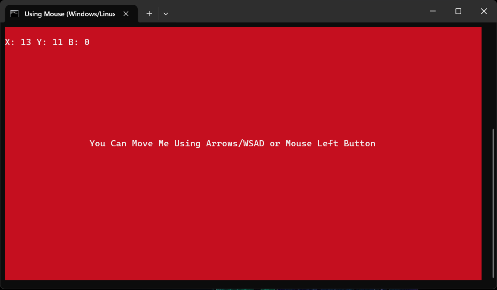
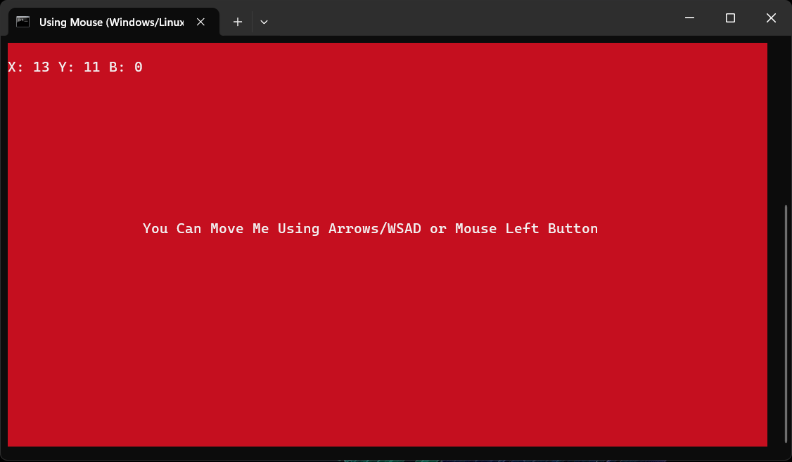

What is new in Ring 1.20
In this chapter we will learn about the changes and new features in Ring 1.20 release.
List of changes and new features
Ring 1.20 comes with the next features!
Try Ring Online (WebAssembly)
Better Samples and Applications
Better Functions
Enable/Disable Hash Comments
Better Files for Loading the StdLib
Better Performance when using Braces
Better Support for Threads
RingRogueUtil Extension
Pause/Resume Embedded Ring VM
Better Scripts for Building Ring
Improving Ring Compiler/VM Source Code
Better Tools and Extensions
Better Documentation
More Improvements
Try Ring Online (WebAssembly)
Using Ring we developed an application to try Ring online using RingQt for WebAssembly

Better Samples and Applications
Added: samples/UsingGemini
Added: samples/General/NeuralNetwork
Added: samples/Drawing/CalculusConics
Added: samples/UsingQt/PDF/CreatePDF.ring
Added: samples/AQuickStart/GameLib/delay.ring
Added: samples/UsingFastPro/updatelist5.ring
Added: samples/UsingFastPro/DestCol.ring
Updated: samples/UsingRayLib/more/ex5_wavingcubes_threads.ring - Better code
Updated: samples/AQuickStart/Files/fexists.ring - Using EXEFolder() function
Updated: samples/AQuickStart/GUILib/gui25.ring - Using relative path
Calculator application - Using sqlitelib.ring and stdlibcore.ring
Customers application - Better digital_clock.ring code
Calendar application - Better controls size
Words game - Better window size
SnakesAndLadders game - Better window title
WiseQuadrat game - Better code to display the winner
Memory game - Reduce delay time from 3 seconds to 1 second
ring/applications - Added the window icon for many applications and games
ring/applications - Using list() instead of newlist() in many applications
ring/applications - Using stdlibcore.ring instead of stdlib.ring in many applications
ring/applications - Using lightguilib.ring instead of guilib.ring in many applications
ring/applications - Using openWindow() instead of open_window() in Controller classes
Better Functions
isWindows64() function - Better Code
print() function - Better code to handle apostrophe inside text
random() function - Produce numeric output when the parameter is a negative number or zero
reverse() function - Beside supporting lists, the function now support strings too
add() function - when adding a list support adding each item alone
list2str() function - Support more parameters: list2str(aList,[nStart],[nEnd])
isDigit(), isAlpha(), isAlnum(), etc. will return False if the input is an empty string
number() function - Produce runtime error if the string contains invalid number
input() function - If the size is not passed as parameter it will read a line
locals() function - Usage in global scope will not return predefined globals like NL, True, etc.
swap() function - Support swaping any two Lists/Objects
filename() function - Better implementation
sleep() function (from stdlibcore.ring) - Better implementation
ring_state_mainfile() function - Support Ring Object Files
updateList() function (from fastpro.ring) - support dest. column as six parameter
Example (1):
cStr = "Welcome to Ring"
? reverse(cStr) # gniR ot emocleW
Example (2):
aList = 1:3
add(aList,4:6) # Add the list as one item
? len(aList) # 4
aList = 1:3
add(aList,4:6,True) # Add each item alone
? len(aList) # 6
? aList
Example (3):
aList = 1:10
cStr = list2str(aList,6,10)
? cStr # 6 7 8 9 10
Example (4):
aList1 = 4:6
aList2 = 1:3
swap(aList1,aList2)
? aList1 # 1 2 3
? aList2 # 4 5 6
aList = [ 4:6 , 1:3 ]
? aList # 4 5 6 1 2 3
swap(aList[1], aList[2])
? aList # 1 2 3 4 5 6
aList = [ 4:6 , 1:3 ]
? aList # 4 5 6 1 2 3
swap(aList,1,2)
? aList # 1 2 3 4 5 6
Example (6):
load "fastpro.ring"
aList = [
[10,20,0],
[30,40,0],
[50,60,0]
]
updateList(aList,:mul,:col,1,10,3)
? aList # 10 20 100 30 40 300 50 60 500
Enable/Disable Hash Comments
We added the next two commands to the Ring Scanner
EnableHashComments
DisableHashComments
Example:
DisableHashComments
#define = 10
EnableHashComments
# Just a comment
DisableHashComments
? #define
EnableHashComments
# End of program
Better Files for Loading the StdLib
Using stdlib.ring will load stdlib functions, classes and some extensions too like RingLibCurl, RingOpenSSL, etc.
Using stdlibcore.ring we can only load stdlib functions.
In this release we provide stdlibclasses.ring that can only load stdlib classes without loading stdlib functions or extensions.
Example:
load "stdlibclasses.ring"
oStack = new Stack {
push("A")
push("B")
push("C")
push("D")
push("E")
pop()
pop()
print()
}
Output:
C
B
A
Note
Also, we improved the files that load the library to load it in separate global scope.
Tip
To load a library in separate global scope use the Load Package command.
Better Performance when using Braces
Using braces to access objects is faster in Ring 1.20 than Ring 1.19
The performance gain could be from 120% to 160%
Tested using Victus Laptop [13th Gen Intel(R) Core(TM) i7-13700H, Windows 11]
Using normal functions or using the dot operator still faster than using braces, but this update is a step forward towards reducing the gap.
Example:
oPoint = new Point
t1 = clock()
for t=1 to 100000
oPoint {
# Access object attributes|methods
}
next
? (clock()-t1)/clocksPerSecond()
class point x y z
Time using Ring 1.20: 0.05 second
Time using Ring 1.19: 0.13 second
Time using Ring 1.18: 0.38 second
Note
We have written this example in this slow way to do the test
A very fast version of the sample will could be written by using braces before the loop
oPoint = new Point
t1 = clock()
oPoint {
for t=1 to 100000
# Access object attributes|methods
next
}
? (clock()-t1)/clocksPerSecond()
class point x y z
Better Support for Threads
Better code inside Ring VM for starting new threads
Better code for sharing the Memory Pool information between threads
Each thread have it’s copy from predefined globals like NL, True, etc.
Share multiple global scopes created using the Load Package command
Ring lists that wraps C pointers will not use internal dynamic cache
Ring lists created using List() will not use internal dynamic cache if size is not changed
RingThreads - Better code for creating the Mutex
Note
Ring Lists that avoid internal dynamic cache provide safe reading from many threads because accessing lists for reading will not include implicit writing to the internal cache.
RingRogueUtil Extension
Using this extension we can create text-based user interfaces (TUI) and console-based games
The extension support Windows, Linux and macOS
Also, we added support for Mouse events (Mouse move, Click, and Scroll)
Example:
load "rogueutil.ring"
setConsoleTitle("Using PrintXY()")
setColor(Black)
setBackgroundColor(Cyan)
cls()
printXY(10,2,'In Mathematics, we call multiplying a number by itself "squaring" the number.')
for t=1 to 12
printXY(10,10+t, "Number: " + t + " x " + t + " = " + (t*t) )
next
getch()
 

Pause/Resume Embedded Ring VM
Ring already supports embedding Ring VM in Ring programs to be able to execute Ring code in isloated Ring state.
Starting from Ring 1.20 we can pause/resume the embedded Ring VM
To pause the VM, just use the (Bye) command which as expected will end the execution but will store the nPC value (Program Counter) so using ring_state_resume() we can continue the execution at any time starting from this nPC value.
Syntax:
ring_state_resume(oState,[cPara|nPara],[lUseReturn])
To learn more about this feature check the chapter: Embedding Ring in Ring
Better Tools and Extensions
Ring Notepad - Full Screen Mode - Added support for opening Find/GoTo/SetTabWidth windows
Ring Notepad - Activate source code window after the end of Full Screen mode
Ring Notepad - Select the Font Family based on the operating system
Ring Notepad - Using Load command will list the common libraries

RingQt - Added: QComponent class (Qt3DCore)
RingQt - Correct parent class name for the QMaterial & QLogicAspect classes
Ring2EXE - Set the stack size for executable files
Ring extension for VSCode is updated to support modern versions of VSCode

Better Scripts for Building Ring
Scripts for building Ring Compiler/VM are moved to ring/language/build folder
Scripts for building Ring, Extensions and Tools are moved to ring/build folder
Files that install dependencies on Linux/macOS are moved to ring/build folder
Added: libqt5multimedia5-plugins to ring/build/installdepubuntu.sh
Added: ring/language/build/buildzig.bat
Added: ring/build/buildgcc.sh
Added: ring/build/buildclang.sh
Improving Ring Compiler/VM Source Code
Better Format
Using constants
Use Bit Fields in structures
Structures Members - Better names
Structures Members - Better order
Functions Parameters - Better names
language/src/os_e.c - randomize() - Better code
language/src/expr.c - ring_parser_ppmm() - Better code
language/src/rstring.c - ring_string_set2_gc() - Better code
language/src/vmlists.c - ring_vm_listpushv() - Avoid stack pop
language/src/vmfuncs.c - ring_vm_isstackpointertoobjstate() - Using simple condition
Better Documentation
The next chapters are revised and improved
Operators
Embedding Ring in Ring
Building From Source Code
More Improvements
Ring VM - Avoid infinite for loops when the step value is zero
Ring VM - Remove old code related to lAddSubListsByMove and lAddSubListsByFastCopy in VM structure
Ring VM - Return command - Better code when we return an object passed to the function as parameter
Ring VM - Return command - Better code when we return class attribute by reference
Ring VM - Better support for try/catch and different operators
Ring VM - Better support for try/catch when creating new object and the parent class doesn’t exist
Ring VM - When we compare between a string and a number take in mind if the string contains extra characters
Ring VM - Treat lists that wrap C pointers as FALSE if the C pointer value is NULL
Ring VM - Loop N command inside For-In loop will execute implicit Exit N-1 command then Loop
Ring VM - Better format when displaying error messages
Ring VM - Correct file name in the error message when the error happens at function arguments
Ring VM - Temp. lists created using the Range operator will be added to the temp. memory